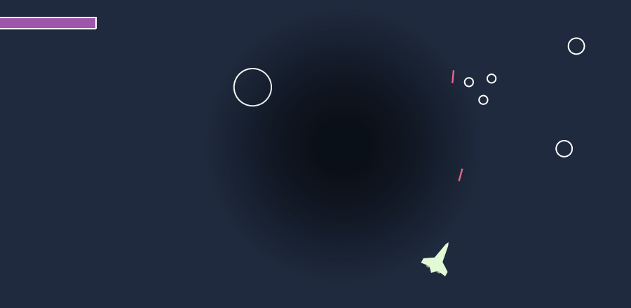
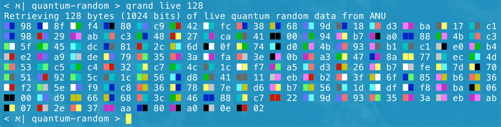
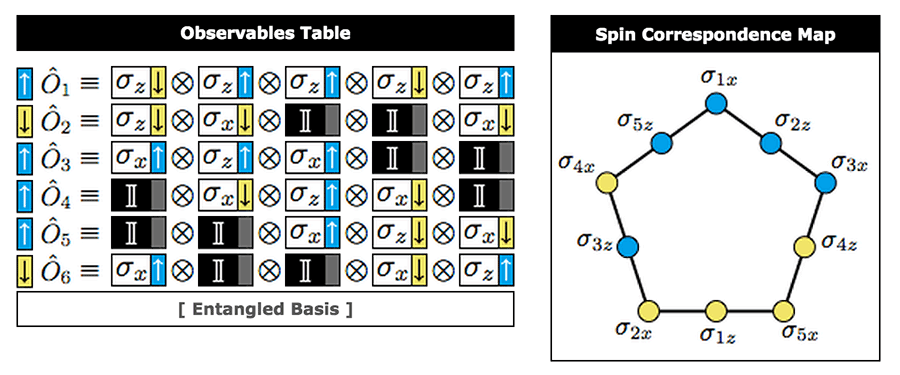

Home
I'm Cliff Harvey a Haskell software engineer at Henry. We're building a system to help teams intelligently gather feedback and monitor trends via a chatbot interface.
I have an academic background in physics, with a degree from WPI where I did some quantum information theory research. I continued to closely follow developments in physics, particularly fundamental physics, high-energy particle physics. I'll occasionally post about these and other topics on my Google Plus page.
For several years I have loved to program in strongly-typed pure functional languages, especially Haskell for general purpose programming. And Idris, a young language bringing dependent types into the mix.
You can find my code on GitHub.
Posts
- State/Costate from Curry/Uncurry Adjunction - November 9, 2017
- A Classy Approach to Recursion - October 11, 2016
- New Era of Experimental HEP Underway at 13 TeV - June 3, 2015
...and you can find more in the archives.
Open-Source Software Projects
|  | |
|
 |
|
 |